خارج السيستمOutside the System
فكرة كيرو صابر · تأليف محمد وائل · إخراج مصطفى الأميرAn idea by Kiro Saber · Written by Mohamed Wael · Directed by Mostafa El-Amir
مدرسة متخصصة في صناعة الأفلام القصيرة، بدأت أولى خطواتها في 2026، والدفعة الأولى الآن في مرحلة تصوير وإنتاج أفلامها.
A school dedicated to short-film production. Launched in 2026, its first cohort is now in filming and production.
مش بنتعلم صناعة الفيلم فقط...
بنصنعه.We don't just learn filmmaking.
We make films.أُطلقت الدفعة الأولى بهدف بناء كوادر جديدة من صُنّاع الأفلام القصيرة في المنيا وصعيد مصر. الدراسة في الدفعة الأولى كانت مدعومة بنسبة 100% من تياترو الصعيد ومجانية بالكامل.
The first cohort was launched to build a new generation of short-film makers in Minya and Upper Egypt. The first cohort was fully supported by Teatro Alsaeed and free of charge.
رحلة عملية عبر الكتابة والتمثيل والإخراج، تنتقل من التدريب إلى موقع التصوير وإنتاج الأفلام.
A hands-on journey through writing, acting and directing, moving from training into real film production.
تطوير الأفكار وكتابة النصوص والسيناريوهات.Developing ideas and writing texts and screenplays.
تدريبات الأداء والعمل أمام الكاميرا.Performance training and working in front of the camera.
تخطيط المشهد، إدارة الممثلين، الكاميرا والإضاءة والتنفيذ.Scene planning, directing actors, camera, lighting and execution.
تحويل التدريب والمشروعات إلى أفلام قصيرة.Turning training and projects into short films.
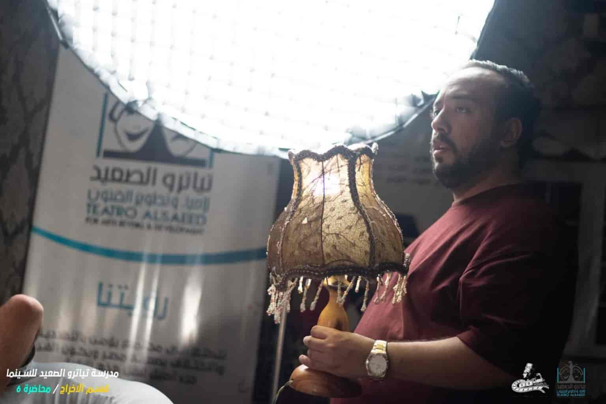
الـStoryboard، إدارة الممثلين، الكاميرا والإضاءة والتنفيذ.
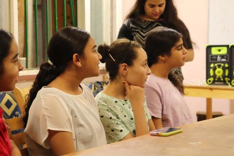
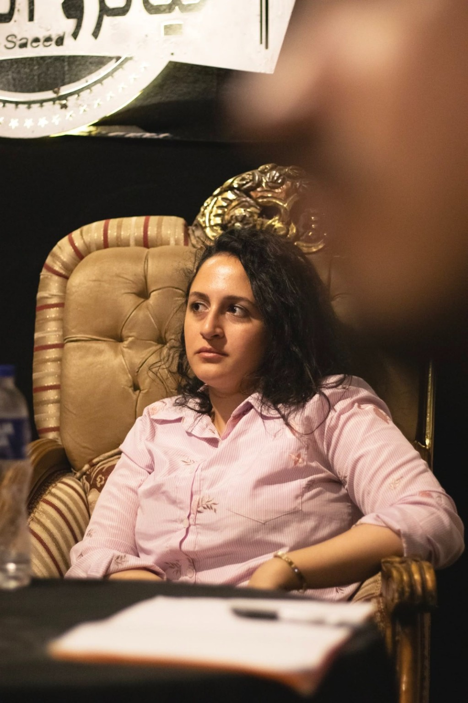
أربعة مشروعات خرجت من قسم الكتابة وتتحول الآن إلى أعمال سينمائية.
فكرة كيرو صابر · تأليف محمد وائل · إخراج مصطفى الأميرAn idea by Kiro Saber · Written by Mohamed Wael · Directed by Mostafa El-Amir
فكرة كيرو صابر · تأليف نور الهدى طاهر · إخراج مينا زغلولAn idea by Kiro Saber · Written by Nour El-Hoda Taher · Directed by Mina Zaghloul
تأليف وإخراج كيرو صابرWritten and directed by Kiro Saber
فكرة كيرو صابر · تأليف مايكل رأفت – أبانوب رضيAn idea by Kiro Saber · Written by Michael Raafat – Abanoub Radi
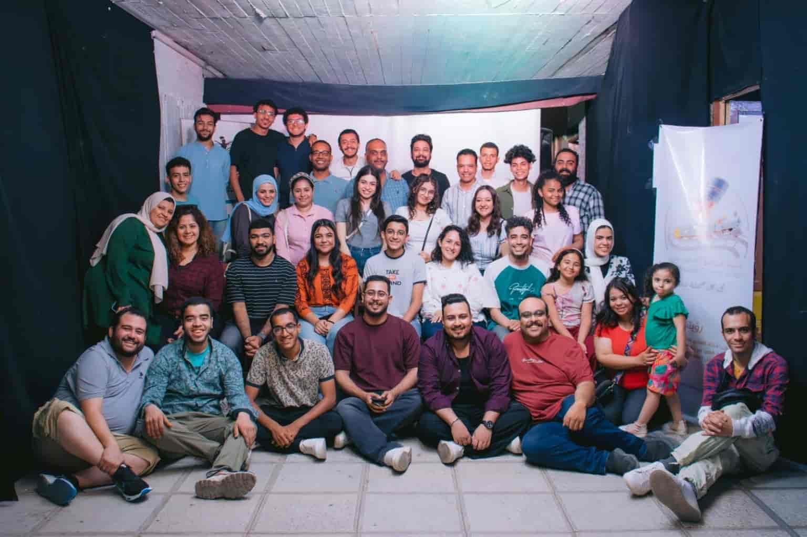
الدفعة التي بدأت معها تجربة مدرسة تياترو الصعيد للسينما، وتخوض الآن تجربة إنتاج أفلامها القصيرة.
The cohort that launched Teatro Alsaeed Cinema School, now taking its short-film projects into production.
توثيق لأول خطوات تحويل أحد مشروعات المدرسة إلى فيلم.
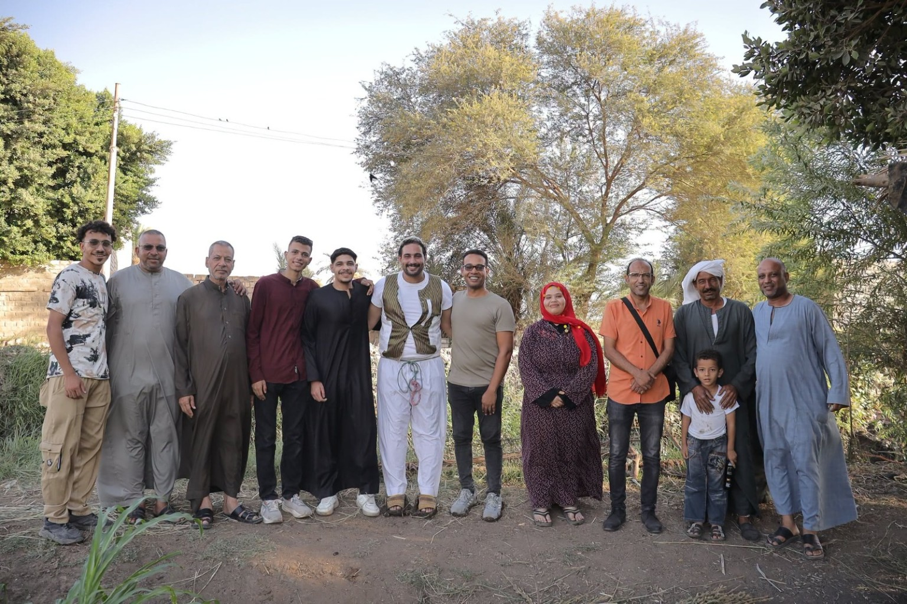
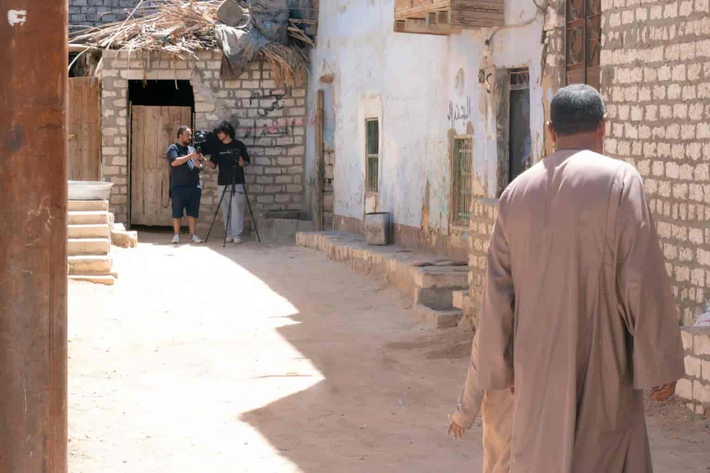
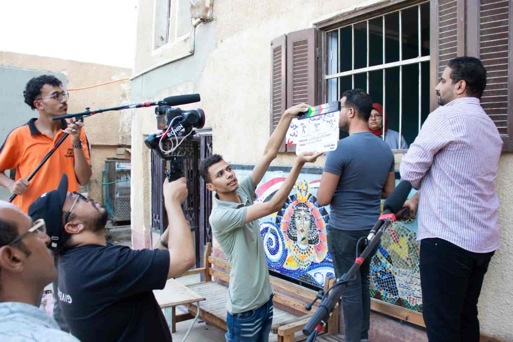
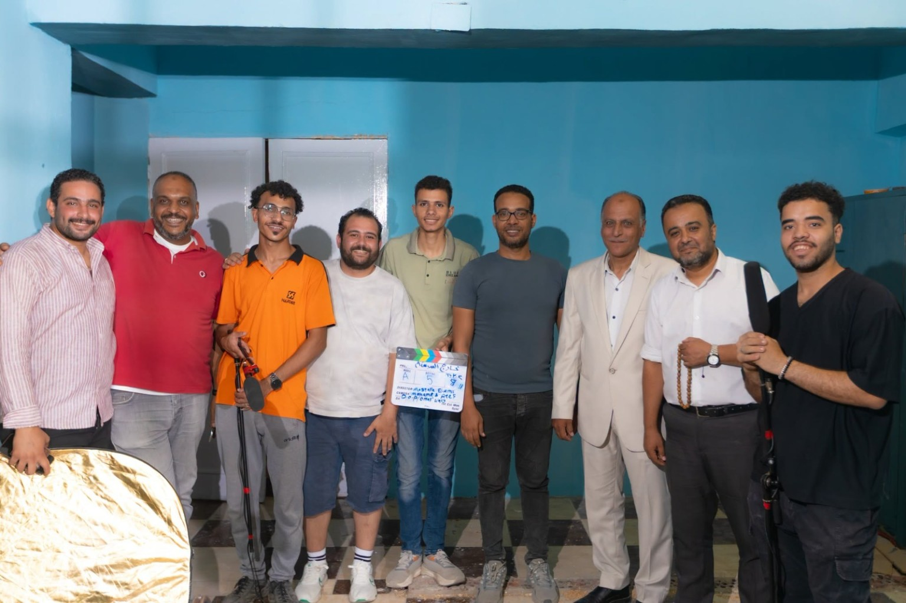
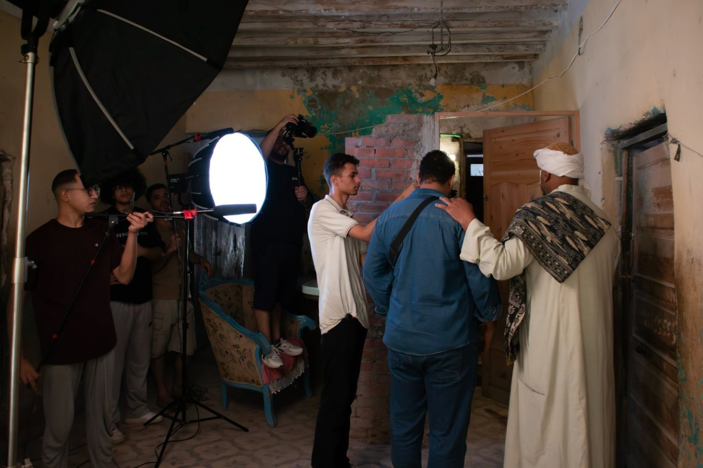
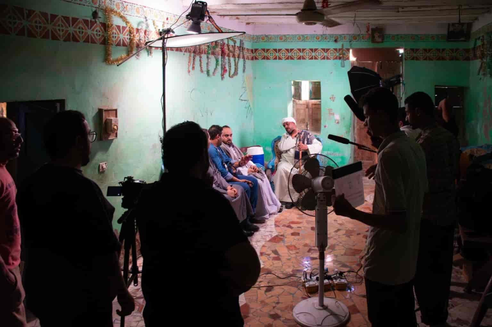
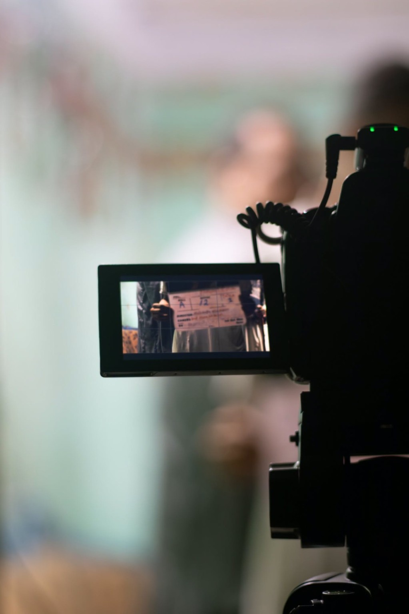
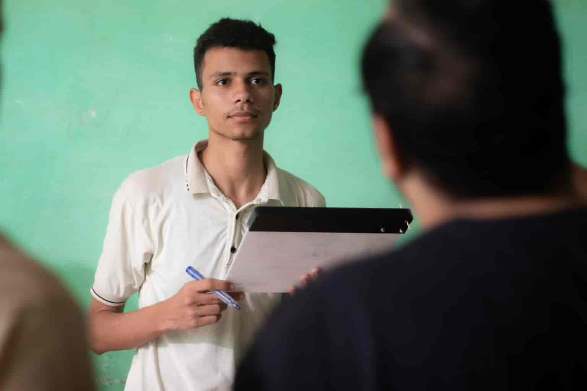
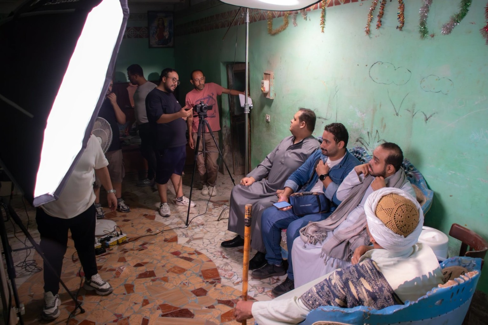
الدفعة الأولى انتقلت من التدريب إلى مرحلة التصوير والإنتاج.